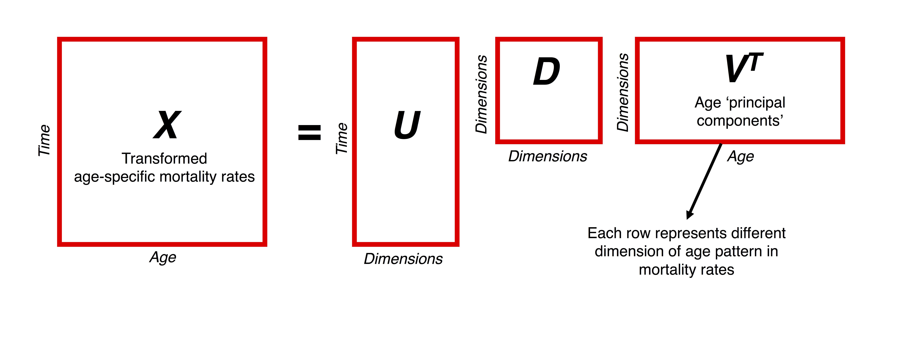
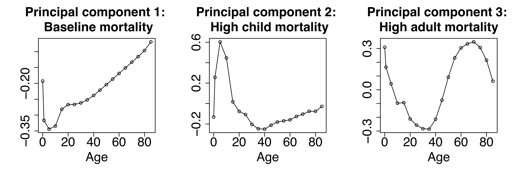
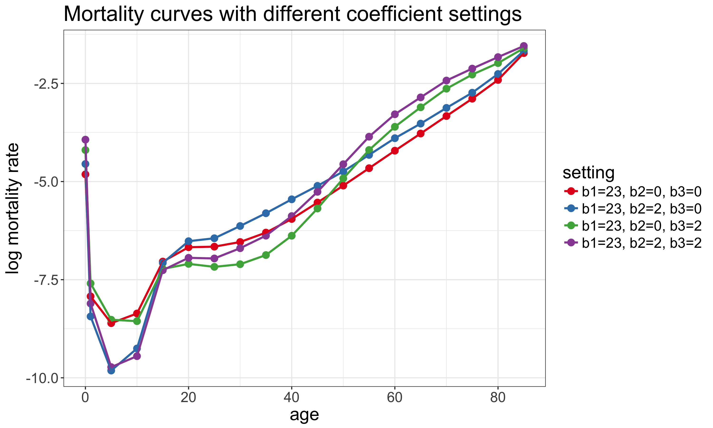
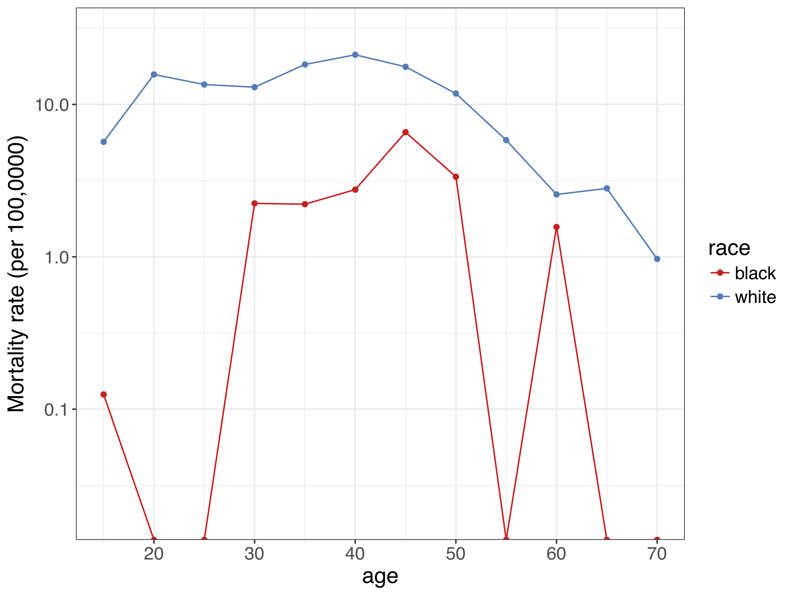
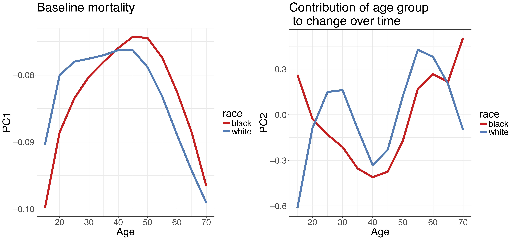
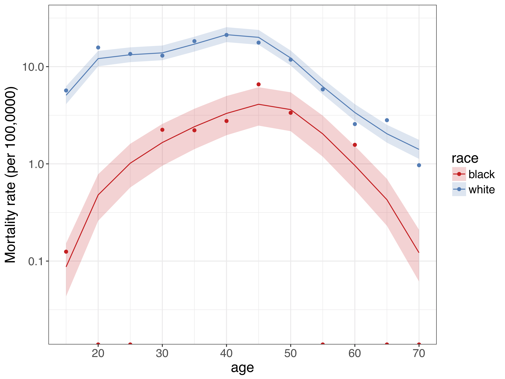

Using SVD in demographic modeling
A core objective of demographic modeling is finding empirical regularities in age patterns in fertility, mortality and migration. One method to achieve this goal is using Singular Value Decomposition (SVD) to extract characteristic age patterns in demographic indicators over time. This post describes how SVD can be used in demographic research, and in particular, mortality estimation.
Background
The SVD of matrix \(X\) is \[ X = UDV^T \] The three matrices resulting from the decomposition have special properties:
- The columns of \(U\) and \(V\) are orthonormal, i.e. they are orthogonal to each other and unit vectors. These are called the left and right singular vectors, respectively.
- \(D\) is a diagonal matrix with positive real entries.
In practice, the components obtained from SVD help to summarize some characteristics of the matrix that we are interested in, \(X\). In particular, the first right singular vector (i.e. the first column of \(V\)) gives the direction of the maximum variation of the data contained in \(X.\) The second right singular vector, which is orthogonal to the first, gives the direction of the second-most variation of the data, and so on. The \(U\) and \(D\) elements represent additional rotation and scaling transformations to get back the original data in \(X\).
SVD is useful as a dimensionality reduction technique: it allows us to describe our dataset using fewer dimensions than implied by the original data. For example, often a large majority of variation in the data is captured by the direction of the first singular vector, and so even just looking at this dimension can capture key patterns in the data. SVD is closely related to Principal Components Analysis: principal components are derived by projecting data \(X\) onto principal axes, which are the right singular vectors \(V\).
Use in demographic modeling
Using SVD for demographic modeling and forecasting first gained popularity after Lee and Carter used the technique as a basis for forecasting US mortality rates. They modeled age-specific mortality on the log scale as
\[ \log m_x = a_x + b_x \cdot k_t \] where
- \(a_x\) is the mean age-specific mortality schedule across all years of analysis,
- \(b_x\) is the average contribution of age group \(x\) to overall mortality change over the period, and
- \(k_t\) is the incremental change in period \(t\).
The latter two quantities are obtained via SVD of a time x age matrix of demeaned, logged mortality rates: \(b_x\) is the first right singular vector, while \(k_t\) is the first left singular vector multiplied the first element of \(D\).
More recently, SVD has become increasingly used in demographic modeling; for example Carl Schmertmann et al. used it to model and forecast cohort fertility, Sam Clark to estimate age schedules of mortality with limited data, and Emilio Zagheni, Magali Barbieri and myself to model subnational age-specific mortality.
Example: age-specific mortality
Imagine you have observations of age-specific mortality rates in multiple years. Create a matrix, \(X\), where each row represents the age-specific mortality rates in a particular year. Modeling of mortality rates is often done on the log scale (to ensure rates are positive), so you may want to take the log of \(X\). Then do a SVD on this matrix - in R this is as easy as svd(x). The age patterns of interest are then contained in the resulting v matrix; so for example svd(x)$v[,1:3] would give you the first three age ‘principal components’ of your matrix.

For example, the first three principal components of US male mortality by state over the years 1980-2010 are plotted below. Each component has a demographic interpretation - the first represents baseline mortality, the second represents higher-than-baseline child mortality, and the third represents higher-than-baseline adult mortality.

For modeling, the idea is that different linear combinations of these components allow you to flexibly represent a wide range of different mortality curves. For example, log-mortality rates could be modeled as
\[ \log m_x = \beta_1 Y_{1x} + \beta_2 Y_{2x} + \beta_3 Y_{3x} \] where the \(Y_{.x}\)’s are the principal components above and the \(\beta\)’s are to be estimated. The plot below shows four different mortality curves derived from the US male principal components with different coefficient settings. You can also play with different settings interactively here.

Example: race-specific opioid mortality
This technique of representing and modeling underlying age patterns need not be restricted to modeling all-cause mortality. For example, SVD proves useful when looking at deaths due to opioid overdoses by race and state in the US. Even though opioid overdoses are rapidly increasing for both the black and white population, overdoses are still a relatively rare event, and so death rates calculated from the raw data suffer from large stochastic/random variation.
For example, the chart below shows age-specific opioid mortality rates by race for North Carolina in 2004.1 As you can see, for the black population there are quite a few age groups were there are zero observed deaths, so the observed mortality rate is zero. However, given what we know about how mortality evolves over age, the zero observed death rates are likely due to random variation.

Even though age patterns are noisy at the state level, we have an idea of age patterns by race in opioid mortality in the national level. So we can use these national age patterns - via information captured in a SVD - to help model underlying mortality rates at the state level.
The figure below shows the first two principal components derived using SVD from race-specific opioid mortality in the US over the years 1999-2015. The first principal component again represents a baseline mortality schedule for opioid-related deaths for each race. The second principal component represents the contribution of each age group to mortality change over time. Notice the ‘double-humped’ shape for the white population - this is driven by heroin deaths being concentrated at younger ages, and prescription opioid-related deaths being concentrated at older ages.

Similar to the example above, we can use these principal components as a basis of a regression framework to estimate underlying age-specific mortality rates by age. Results from such a model for North Carolina in 2004 are shown below. The dots represent mortality rates calculated from the raw data, as above. The lines and associated shaded area represent estimates of the underlying mortality rates with 95% uncertainty intervals. These were obtained from a model that utilized information from the principal components. Instead of dealing with zero observed deaths, we now have estimates that give more plausible values for the underlying mortality rates.

Summary
SVD is a useful technique to extract the main characteristics of age patterns in demographic indictors. These structural age patterns are useful to get a better idea of underlying processes when available data are sparse or noisy. Age patterns derived from SVD can be flexibly shifted and adjusted based on available data. Built-in functions in R make it relatively easy to use SVD to better understand, model and project demographic indicators.
Footnotes
cross-promotional plug: you can play with this data yourself with the help of the narcan
Rpackage, which Mathew Kiang and I are working on.↩︎